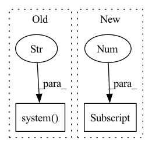

Pattern ID :33950

Before Change
assert redundant, "No secondary mirror"
url = f"https://storage.googleapis.com/{repo}/ckpt/{name}"
print(f"Downloading {url} to {file}...")
os.system(f"curl -L "{url}" -o "{file}" --retry 3 -C -") // curl download, retry and resume on fail
finally:
if not file.exists() or file.stat().st_size < 1E6: // check
file.unlink(missing_ok=True) // remove partial downloads
After Change
name = Path(urllib.parse.unquote(str(file))).name // decode "%2F" to "/" etc.
if str(file).startswith(("http:/", "https:/")): // download
url = str(file).replace(":/", "://") // Pathlib turns :// -> :/
name = name.split("?")[0] // parse authentication https://url.com/file.txt?auth...
safe_download(file=name, url=url, min_bytes=1E5)
return name
In pattern: SUPERPATTERN
Frequency: 3
Non-data size: 2
Instances
Fragment ID: 97236635
Project Name: fcakyon/yolov5-pip
Commit Name: 5afe85ae36145f9f3b511b2918b51566b7296f5d
Time: 2021-06-22
Author: 34196005+fcakyon@users.noreply.github.com
File Name: yolov5/utils/google_utils.py
M Class Name: AnonimousClass
N Class Name: AnonimousClass
M Method Name: attempt_download(2)
N Method Name: attempt_download(2)
M Parent Class:
N Parent Class:
M File Name: yolov5/utils/google_utils.py
N File Name: yolov5/utils/google_utils.py
M Start Line: 21
M End Line: 59
N Start Line: 41
N End Line: 73
'>
Before Change
raise
finally:
logger.warning("entering finally...")
os.system("pkill jinad")
os.system(f"pkill {sys.executable}")
logger.warning("following is output from .log files:")
os.system(f"cat *.log")
After Change
time.sleep(30)
query_doc = Document(text="hello world")
response = query_docs(query_doc)
matches = response[0].data.docs[0].matches
logger.info(f"got {len(matches)} matches")
assert matches
'>
Fragment ID: 97236634
Project Name: jina-ai/examples
Commit Name: c3ea2eddcc58117b3f28c34ca861e6fd2a341efb
Time: 2021-09-02
Author: deepankar.mahapatro@jina.ai
File Name: wikipedia-sentences-query-while-indexing/tests/test_query_while_indexing.py
M Class Name: AnonimousClass
N Class Name: AnonimousClass
M Method Name: test_query_while_indexing(0)
N Method Name: test_query_while_indexing(0)
M Parent Class:
N Parent Class:
M File Name: wikipedia-sentences-query-while-indexing/tests/test_query_while_indexing.py
N File Name: wikipedia-sentences-query-while-indexing/tests/test_query_while_indexing.py
M Start Line: 30
M End Line: 52
N Start Line: 42
N End Line: 68
'>
Before Change
assert redundant, "No secondary mirror"
url = f"https://storage.googleapis.com/{repo}/ckpt/{name}"
print(f"Downloading {url} to {file}...")
os.system(f"curl -L "{url}" -o "{file}" --retry 3 -C -") // curl download, retry and resume on fail
finally:
if not file.exists() or file.stat().st_size < 1E6: // check
file.unlink(missing_ok=True) // remove partial downloads
After Change
name = Path(urllib.parse.unquote(str(file))).name // decode "%2F" to "/" etc.
if str(file).startswith(("http:/", "https:/")): // download
url = str(file).replace(":/", "://") // Pathlib turns :// -> :/
name = name.split("?")[0] // parse authentication https://url.com/file.txt?auth...
safe_download(file=name, url=url, min_bytes=1E5)
return name
'>
Fragment ID: 97236639
Project Name: ultralytics/yolov5
Commit Name: f3c3d2ce5d85ba77336a9d0a87c6a446732cdda6
Time: 2021-06-08
Author: glenn.jocher@ultralytics.com
File Name: utils/google_utils.py
M Class Name: AnonimousClass
N Class Name: AnonimousClass
M Method Name: attempt_download(2)
N Method Name: attempt_download(2)
M Parent Class:
N Parent Class:
M File Name: utils/google_utils.py
N File Name: utils/google_utils.py
M Start Line: 21
M End Line: 59
N Start Line: 41
N End Line: 73